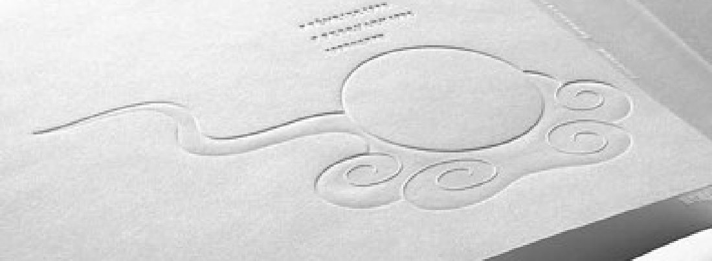

형태나 소재의 참신함으로 놀라움을 선사하는 것이 아니라, 생활의 틈새로부터 평범하면서도 은근히 사람을 놀라게 하는 발상을 끊임없이 끄집어내는 독창성이야말로 디자인입니다. 우리는 흔히
독창적인 디자인이라 하면 전에 본 적 없는 새로운 것을 기대한다. 하지만 평범한 것들을 바라보는 사소한 시각의 변화로도 독창적인 디자인을 만들 수 있습니다. 하라 켄야는 여러 분야의
디자이너들에게 일상적이고 친근한 물품들을 다시 디자인해 줄 것을 요청했고, 작가는 그렇게 만들어진 일상품으로 〈리디자인 - 일상의 21세기〉 전시회를 열었습니다.
건축가 반 시게루가 리 디자인한 일상품은 화장지입니다. 쉽게 풀리는 기존 화장지와 달리 사각형 화장지는 당길 때마다 달그락 하는 저항음이 발생해 자원 절약 효과를 기대할 수 있습니다.
또한 원형 화장지는 운반을 위해 겹쳤을 때 많은 틈이 생기지만 사각형 화장지는 틈이 줄어 공간을 절약할 수 있습니다. 제품 디자이너 후카사와 나오토가 리 디자인한 티백입니다. 손잡이가
달린 평범한 티백처럼 보일 수 있지만 손잡이 색깔이 홍차가 가장 맛있어지는 시점의 색깔과 비슷하고, 당장 알아차릴 수 없겠지만 사용자는 차츰 손잡이 색깔을 기준으로, 자신은 고리 색보다
진할 때 홍차 맛이 좋다거나 연할 때 홍차 맛이 좋다거나 하는 식의 의미 부여를 할 수 있습니다.
이처럼 은근한 변화로 일상을 새롭게 하는 발상도 독창적인 디자인이 될 수 있습니다.
무인양품
'-이'는 개인의 의지를 확실히 보여주는 강한 태도가 느껴진다. 오늘 점심에는 무엇을 먹고 싶냐는 물음에 '우동으로 충분해요.'라고 대답하는 것보다 '우동이 좋아요.'라고 대답하는 편이
기분도 산뜻하고 우동에게도 실례가 되지 않습니다. … 기호를 선명하게 드러내는 태도는 '개성'이라는 가치와 더불어 언제부터인가 필요 이상으로 존중받게 되었다. 자유란 '-이'에 가까운
가치관일지도 모릅니다. 그러나 그것을 인정하는 한편으로 '-이'는 가끔 집착을 포함한 에고이즘을 만들어 불협화음을 발생시킨다는 사실을 지적하고 싶습니다. … 그런 의미에서 우리는
'-으로' 속에 작용하는 '억제'나 '양보' 그리고 '한발 물러선 이성'을 평가해야 하는 시점에 와 있습니다. '-으로'는 '-이'보다 한 수 높은 자유의 형태가 아닐까요.
이는 하라 켄야가 생각하는 무인양품의 비전입니다. '-으로' 충분한 기능과 디자인 외에는 모두 생략하고, 그래서 무인양품의 제품은 군더더기 없이 간결합니다.
내가 제안하는 무인양품의 광고 콘셉트는 한마디로 말하면 'EMPTINESS'. 즉 광고에서 명확한 메시지를 드러내는 것이 아니라 오히려 빈 그릇을 내보이는 것처럼 하자는 의미입니다.
명확한 메시지를 수용자에게 던지는 것만이 유일한 광고 커뮤니케이션 방식은 아닙니다. 반대로 많은 것을 담을 수 있는 빈그릇을 제시함으로써 수용자가 각자의 의미를 담아내는 것 또한
커뮤니케이션의 한 방식입니다. 하라 켄야는 무인양품에 대한 다양한 소비자의 다양한 이미지를 담아내기 위해 지평선을 사용했습니다.
작가나 디자이너의 에고이즘에서 벗어나 최적의 소재로 최적의 형태를 탐구하는 가운데 사물의 에센스만을 현실화하는 독창적인 생략이라면 이상적이겠지만, 그것은 '생략'이라기보다는 '궁극적인
디자인'이라고 하는 편이 좋을 것 같습니다. 출발 당시부터 'NO DESIGN'을 표방한 무인양품, 그러나 무인양품의 사상을 제대로 실현하려면 오히려 수준 높은 디자인이 필요하다는 인식이
서서히 고조되었습니다.
감각

즉 이미지란 감각 기관을 통해서 외부로부터 들어온 자극과 그에 의해서 재생되는 과거의 기억이 두되 속에서 복합, 연계된 것입니다. 디자인이라는 행위는 이와 같은 복합적인 이미지의 생성을
전제로 하여 적극적으로 그 과정에 참여합니다.
하라 켄야가 생각하는 디자인은 시각뿐만 아니라 촉각, 청각, 미각, 후각처럼 인간의 오감을 자극해 이미지를 만들고 그 감각이 일으키는 수용자의 기억과 합쳐져 수용자에게 복합적인 이미지를
떠오르게 하는 것입니다. 그는 수용자가 시각 외 다른 감각들도 느낄 수 있게 디자인하며 그중에서 촉각을 잘 이용했습니다.
1998년 나가노 올림픽의 개회식 프로그램 표지를 디자인하며 작가는 촉각을 사용했습니다. 소복이 쌓인 눈을 밟는 기억을 떠올리게 하기 위해 제지 회사에 의뢰하여 새로운 종이를
개발했습니다. 푹신한 종이와 매끄럽게 빛나는 눌린 글자들은 수용자들의 촉각을 자극하고, 눈 내린 아침 발자국을 만들며 걷던 기억을 상기시키고, 눈과 얼음의 이미지를 만들어내는 부드러운
소재 중앙에 짙은 빨간색 성화를 새겨 넣었습니다. 광택이 나는 붉은 불꽃이 푹신푹신한 눈의 중앙에 묵직하게 자리 잡고 있다. 이러한 촉각의 콘트라스트에 의해서 표지가 완성되었습니다.
욕망의 에듀케이션
일본의 자동차가 일본인의 눈에 얌전하게 보이는 것은 자동차에 대한 일본인의 욕망을 정밀하게 스캔하고 그것에 완벽하게 순종하는 형태로 만들었기 때문입니다. 따라서 좋은 의미에서건 나쁜
의미에서건 일본의 자동차는 일반인의 자동차에 대한 욕망의 수준 그 자체이고, 마케팅이 정밀하게 이루어지는 한 제품은 그 메이커가 참여하고 있는 시장의 의식을 반영하며, 그 욕망의 수준이나
방향이 이들 제품을 통해서 뚜렷하게 드러나기 때문입니다.
디자인은 브랜드 이미지 구축과 마케팅에도 사용됩니다. 마케팅을 통해 출시되는 제품은 그 시장의 욕망 수준을 반영하고 마케팅으로 시장의 욕망을 잘 파악했기에 제품은 잘 팔릴 것이고, 문제는
그 욕망의 수준입니다
감각이 뒤떨어진 나라에 감각적으로 앞선 나라의 상품이 들어오면 그 나라 사람들은 들어온 상품에 자극받아 눈이 트여 타지에서 온 상품에 욕망을 품게 될 것입니다. 그러나 이 반대의 경우는
발생하지 않습니다. 여기서 말하는 '감각이 좋은' 상품이 그렇지 못한 상품과 비교되는 경우 뒤처진 상품의 개발을 촉진하기도 하지만 다른 한편으로는 밀어내 버리는 힘도 갖고 있습니다.
넓은 시야로 형세를 판단하는 단서가 여기에 있습니다. 즉 문제는 마케팅의 정밀성에 달린 것이 아니고, 그 기업이 진출하는 시장의 욕망이 얼마나 높은 수준으로 유지되고 있는지를 항시
주시하면서 그에 맞는 전략을 마련하지 않는다면, 그 기업의 상품이 인기를 얻기는 불가능합니다. 이 부분이 문제입니다 브랜드는 가상으로 만들어지는 것이 아니라 대상으로 하는 나라와 그 문화
수준을 반영합니다.
따라서 제품을 출시함에 있어 고객의 욕망만을 반영해서는 안되고, 시장의 문화 수준을 끌어올릴 수 있는 제품을 출시해 다른 나라, 다른 영역에까지 영향을 미칠 수 있어야 합니다. 그렇지
않다면 문화 수준이 낮은 시장의 제품은 다른 나라나 영역에서 만들어진 '감각이 좋은' 상품에 밀리게 될 것입니다. 이렇듯 고객의 욕망만 수용하는 것이 아니라 마케팅을 통해 문화 수준을
끌어올리는 것을 '욕망의 에듀케이션'이라 합니다.
정밀한 마케팅은 이 '느슨함'이라고 해도 좋을 만한 고객의 성향을 정확하게 분석하고 상품이라는 형태로 완성하여 유통합니다. 고객의 본심에 더 가깝게 다가선 상품은 잘 팔리겠지만 다른
의미로는 마케팅이 생활 문화를 응석 받이로 키운 것이며 이것이 반복되면 문화 전체가 태만한 방향으로 기울어질 위험성이 있다. 세계적인 시점에서 보았을 때 그곳에서 만들어지는 상품이 다른
시장을 개발할 힘을 갖고 있을 리 없습니다.
디자인의 디자인
하라켄야의 디자인 철학을 담은 책 디자인의디자인에 정확히 지적한 대로 디자인은 어떻게 정보를
1. 쉽고 2. 독창적이며 3. 해학적으로 전달할 수 있을지 고민하며, 그 과정에서 소리, 질감 등 다양한 인간의 다양한 감각을 사용하게 합니다. 서양 철학에서 누적된 피로 때문에 세계가
동양으로 눈길을 돌리고 있는 지금, 동양의 사상을 담은 하라 켄야의 디자인 철학은 아직도 유효합니다.
합리적인 '물건 만들기'를 통해서 인간 정신의 보편적인 균형과 조화를 탐색하고자 하는 것이야말로 넓은 의미에서 디자인적인 사고방식이고, 바꾸어 말하면 인간이 살아가는 것, 생활하는 것의
의미를 물건 만들기의 과정을 통해서 해석하고자 하는 의욕이 바로 디자인입니다.